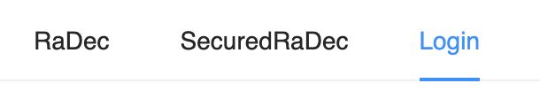
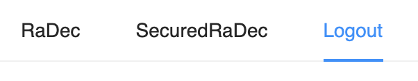

Adding Authentication
Like the User Interface Gateway, a web application backend is a boundary between the public side of the observatory software system and the authenticated, protected control system. Because of this, a web application developer must be conscious of and support the authentication and authorization of its users according to the observatory security approach.
It’s okay to have unprotected routes that are read-only and can not cause any changes, but any route that can change the control system must be protected with the correct level of authorization. This flow describes how to integrate authentication and authorization through the use of CSW AAS Service.
Add a Protected Route in Backend
To demonstrate authorization, we will need to create a “protected” route, that is, an endpoint that requires a valid authorization token to access.
Add new route with protection
We will add a new route to our server which is protected. To access this route, the request should contain a token containing the role esw-user. We have set up some sample users when we start csw-services with the Authentication and Authorization Service enabled, and we will use one of these users for our tutorial.
In the text above, esw-user is not a login or individual name; it is a role in the AAS security model. During operations, AAS will be configured to give individuals or logins specific roles. For now, we have created a few logins that have the same role as their login names.
Add the route code below to SampleRoute.scala from the basic flow. Note the route requires the user to have the esw-user role to access the endpoint.
If you deleted the tilde (~) at the end of your route in the last tutorial, be sure to put it back, and then append the following:
- Scala
-
source
path("securedRaDecValues") { post { securityDirectives.sPost(RealmRolePolicy("Esw-user")) { _ => entity(as[RaDecRequest]) { raDecRequest => complete(raDecService.raDecToString(raDecRequest)) } } } }
Consume a Protected Route in the Frontend
Now, we will create a component in our frontend UI that uses our protected route.
Add secured Post
Add the following method in api.ts, which sends a request to our /securedRaValues backend route.
- Typescript
-
source
export const securedPostRaDecValues = async ( baseUrl: string, raDecRequest: RaDecRequest, token: string ): Promise<RaDecResponse | undefined> => ( await post<RaDecRequest, RaDecResponse>( baseUrl + 'securedRaDecValues', raDecRequest, { Authorization: `Bearer ${token}` } ) ).parsedBody
Note that this method requires an AAS authorization token, which is then passed to the server with the request.
Create a React component to consume our secured route
In the pages folder, create a file named SecuredRaDecInput.tsx. Then create a SecuredRaDecInput React component with the following form.
- Typescript
-
source
export const SecuredRaDecInput = (): JSX.Element => { return ( <Form onFinish={onFinish} style={{ padding: '1rem' }} wrapperCol={{ span: 1 }}> <Form.Item label='RaInDecimals (secured)' name='raInDecimals'> <Input role='RaInDecimals' style={{ marginLeft: '0.5rem' }} /> </Form.Item> <Form.Item label='DecInDecimals (secured)' name='decInDecimals'> <Input role='DecInDecimals' /> </Form.Item> <Form.Item> <Button type='primary' htmlType='submit' role='Submit'> Submit </Button> </Form.Item> </Form> ) }
Use secured Post in our component
Again, a reference to the Location Service is obtained via a context named LocationServiceProvider. Since this component requires authorization, we use another context to get a reference to the authorization system.
Add the following as first lines inside the SecuredRaDecInput component.
- Typescript
-
source
export const SecuredRaDecInput = (): JSX.Element => { const locationService = useLocationService() const { auth } = useAuth()
The useAuth method is a hook provided in hooks/useAuth.tsx that accesses the context. Like LocationServiceProvider, the AuthContextProvider context is made available to the component during construction in App.tsx.
Now, add an onFinish handler above the return statement, similar to our non-secured component. Note that this time we will obtain the token from the authorization context and pass that to our API method.
- Typescript
-
source
const onFinish = async (values: RaDecRequest) => { const backendUrl = await getBackendUrl(locationService) const valueInDecimal = { raInDecimals: Number(values.raInDecimals), decInDecimals: Number(values.decInDecimals) } if (backendUrl) { const token = auth?.token() if (!token) { errorMessage('Failed to greet user: Unauthenticated request') } else { const response = await securedPostRaDecValues( backendUrl, valueInDecimal, token ) if (response?.formattedRa && response?.formattedDec) { console.log(response.formattedRa) console.log(response.formattedDec) } else { console.error(response) throw new Error( 'Invalid response, formattedRa or formattedDec field is missing' ) } } } }
Don’t forget to add the necessary imports!
Connect our new component
Next, we will add the protected route in Routes.tsx within the <Switch> block, before the catch-all * route.
- Typescript
-
source
<ProtectedRoute path='/securedRaDec' component={SecuredRaDecInput} />
Add an action for our new route in MenuBar.tsx below the previously added RaDec Menu.Item
- Typescript
-
source
<Menu mode='horizontal'> <Menu.Item key='raDec'> <Link to='/'>RaDec</Link> </Menu.Item> <Menu.Item key='securedRaDec'> <Link to='/securedRaDec'>SecuredRaDec</Link> </Menu.Item> </Menu>
Add Login & Logout functionality
To get the authorization token the user needs to log in. To provide login and logout capabilities, we will make use of the generated Login and Logout components.
Add menu item actions for logging in and logging out in MenuBar.tsx below the previously added SecuredRaDec Menu.Item The menu item will change depending on whether the user is logged in or not to show protected functionality.
- Typescript
-
source
<Menu.Item key='securedRaDec'> <Link to='/securedRaDec'>SecuredRaDec</Link> </Menu.Item> {isAuthenticated ? <Logout logout={logout} /> : <Login login={login} />}
Note the authorization hook is used again here to get a handle to the authorization store.
- Typescript
-
source
export const MenuBar = (): JSX.Element => { const { auth, login, logout } = useAuth() const isAuthenticated = auth?.isAuthenticated() ?? false
Try It Out!
Compile the backend and restart it. Then run the UI as before and try it out.
Notice the menu bar shows a “Login” item, since we haven’t logged in

Clicking on the “Login” (or “SecuredRaDec”) menu item will take you to the login page. Be sure to log in with theesw-user1 user with the password esw-user1.
You may note the “Login” menu item has changed to “Logout”.

Once logged in, you will be able to use the SecuredRaDec form. The behavior is the same as the non-secured version, but it gives you the idea of how pages and routes can be protected.
Nice Work!